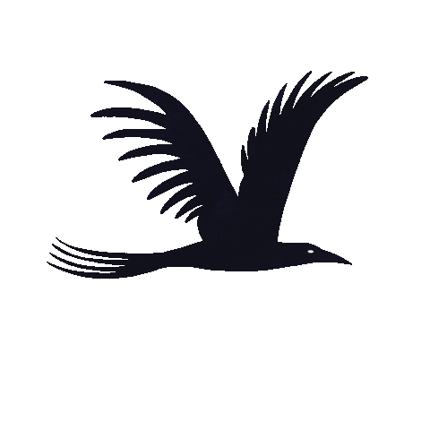
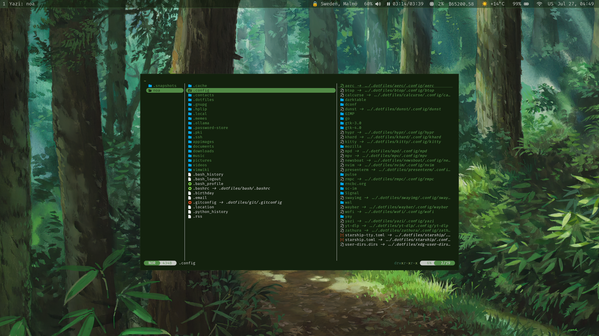
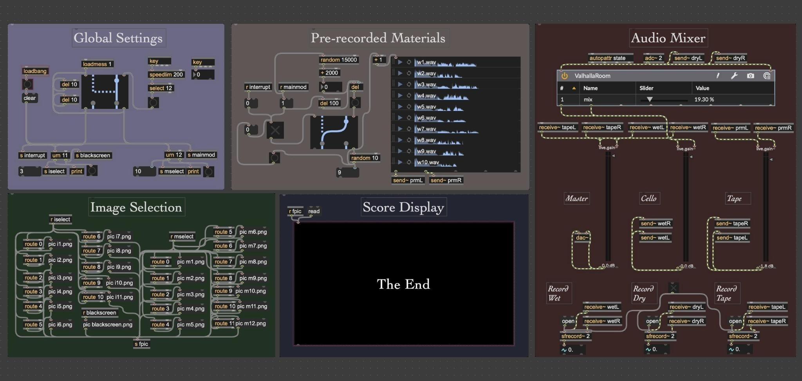

noa lund
composer, artist
dots

I use macOS for music and video production, but everything else—writing, photo editing, email, and so on—is done on my custom Linux system (Arch, btw). It’s a relatively lightweight setup that consists mostly of FOSS CLI applications with Vim-like keybindings.
Some of the programs I use include:
- Desktop: Hyprland, kitty, Neovim, pywal16, Waybar, Wofi, Yazi
- Office: aerc, calcurse, groff, khard, Presenterm, sc-im with gnuplot, Zathura
- Music: LilyPond, MPD with rmpc client
- Media: darktable, mpv, swayimg
- Misc.: Dunst, Newsboat, Starship, yt-dlp
After installing Hyprland, Git, GNU Stow, and other necessary dependencies, you can install my configuration with:
git clone https://github.com/noalund/dots ~/.dotfiles
cd ~/.dotfiles && rm -f ~/.bashrc && mkdir -p ~/.config && stow .I also maintain a separate repository containing the scripts I use alongside this setup, which can be cloned as follows:
rm -rf ~/.local/bin
git clone https://github.com/noalund/scripts ~/.local/binMOSAIC

MOSAIC: Modular Open Score Arranger and Indeterminate Composition is a Max/MSP patch and accompanying cello composition created in 2024. It is a framework for modular, notated compositions, loosely inspired by 20th-century open scores such as Piano Sonata No. 3 (Boulez) and Klavierstück XI (Stockhausen). Rather than instructing the performer to determine the order of events, the piece assembles independent notated fragments in real time using a simple algorithm.
In performance, the cellist reads notated fragments as they appear on screen, navigating the score with a foot pedal. At the same time, prerecorded samples are triggered at random intervals, creating brief interruptions. The work was premiered in 2024 and recorded shortly afterward.